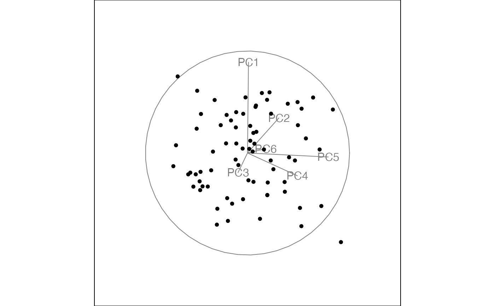
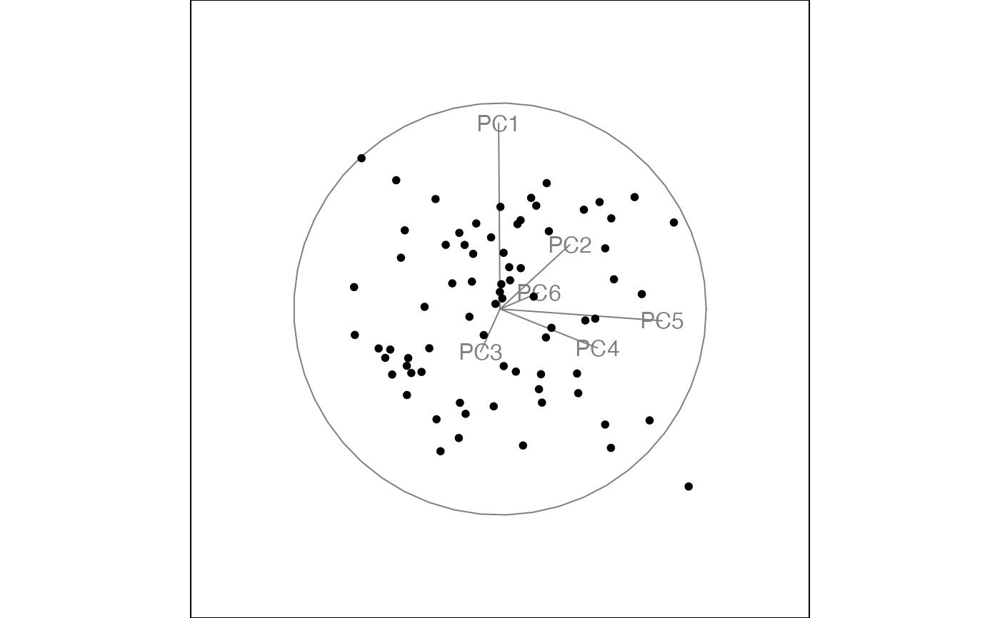
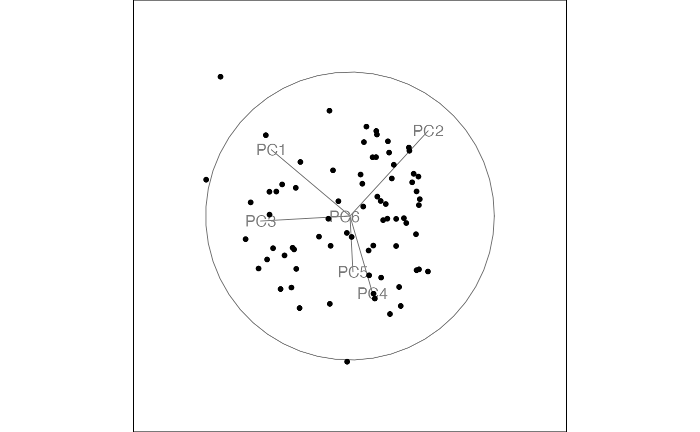
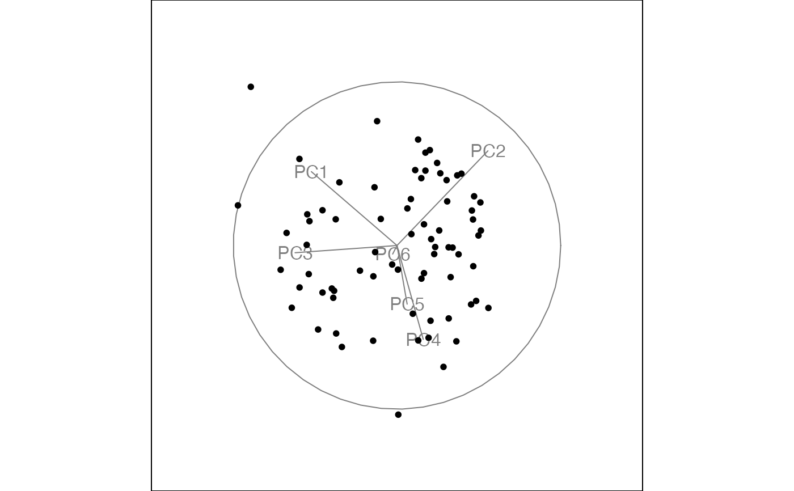

Instead of choosing new projections at random like the grand tour, the guided tour always tries to find a projection that is more interesting than the current projection.
guided_tour(index_f, d = 2, alpha = 0.5, cooling = 0.99, max.tries = 25, max.i = Inf, search_f = search_geodesic, ...)
| index_f | the index function to optimise. |
|---|---|
| d | target dimensionality |
| alpha | the initial size of the search window, in radians |
| cooling | the amount the size of the search window should be adjusted by after each step |
| max.tries | the maximum number of unsuccessful attempts to find a better projection before giving up |
| max.i | the maximum index value, stop search if a larger value is found |
| search_f | the search strategy to use |
| ... | arguments sent to the search_f |
Currently the index functions only work in 2d.
Usually, you will not call this function directly, but will pass it to
a method that works with tour paths like animate,
save_history or render.
cmass, holes and lda_pp
for examples of index functions. The function should take a numeric
matrix and return a single number, preferrably between 0 and 1.
search_geodesic, search_better,
search_better_random for different search strategies
#> Value 0.867 1.4% better (0.299 away) - NEW BASIS#>#> Value 0.912 2.9% better (0.491 away) - NEW BASIS#>#> Value 0.894 2.1% better (0.197 away) - NEW BASIS#>clrs <- c("#486030", "#c03018", "#f0a800") col <- clrs[as.numeric(flea$species)] animate_xy(flea[, 1:6], guided_tour(lda_pp(flea[,7])), sphere = TRUE, col=col)#> Value 0.970 0.8% better (0.237 away) - NEW BASIS#># save_history is particularly useful in conjunction with the # guided tour as it allows us to look at the tour path in many different # ways f <- flea[, 1:3] tries <- replicate(5, save_history(f, guided_tour(holes())), simplify = FALSE)#> Value 0.472 38.4% better (0.658 away) - NEW BASIS #> Value 0.480 40.8% better (0.781 away) - NEW BASIS #> Value 0.482 0.4% better (0.074 away) - NEW BASIS #> Value 0.482 0.0% better (0.027 away) #> Value 0.482 0.0% better (0.013 away) #> Value 0.482 0.0% better (0.019 away) #> Value 0.482 0.0% better (0.032 away) #> Value 0.482 0.0% better (0.032 away) #> Value 0.482 0.0% better (0.034 away) #> Value 0.482 0.0% better (0.029 away) #> Value 0.482 0.0% better (0.014 away) #> Value 0.482 0.0% better (0.009 away) #> Value 0.482 0.0% better (0.034 away) #> Value 0.482 0.0% better (0.014 away) #> Value 0.482 0.0% better (0.035 away) #> Value 0.482 0.0% better (0.034 away) #> Value 0.482 0.0% better (0.010 away) #> Value 0.482 0.0% better (0.012 away) #> Value 0.482 0.0% better (0.009 away) #> Value 0.482 0.0% better (0.018 away) #> Value 0.482 0.0% better (0.035 away) #> Value 0.482 0.0% better (0.020 away) #> Value 0.482 0.0% better (0.028 away) #> Value 0.482 0.0% better (0.004 away) #> Value 0.482 0.0% better (0.034 away) #> Value 0.482 0.0% better (0.011 away) #> Value 0.482 0.0% better (0.033 away) #> No better bases found after 25 tries. Giving up. #> Final projection: #> 1.000 0.021 #> -0.011 0.667 #> -0.018 0.745 #> Value 0.481 41.1% better (0.741 away) - NEW BASIS #> Value 0.476 39.8% better (0.660 away) - NEW BASIS #> Value 0.481 1.0% better (0.415 away) - NEW BASIS #> Value 0.482 0.1% better (0.046 away) - NEW BASIS #> Value 0.482 0.0% better (0.028 away) #> Value 0.482 0.0% better (0.014 away) #> Value 0.482 0.0% better (0.016 away) #> Value 0.482 0.0% better (0.041 away) #> Value 0.482 0.0% better (0.029 away) #> Value 0.482 0.0% better (0.032 away) #> Value 0.482 0.0% better (0.047 away) #> Value 0.482 0.0% better (0.033 away) #> Value 0.482 0.0% better (0.043 away) #> Value 0.482 0.0% better (0.040 away) #> Value 0.482 0.0% better (0.042 away) #> Value 0.482 0.0% better (0.013 away) #> Value 0.482 0.0% better (0.005 away) #> Value 0.482 0.0% better (0.026 away) #> Value 0.482 0.0% better (0.024 away) #> Value 0.482 0.0% better (0.047 away) #> Value 0.482 0.0% better (0.027 away) #> Value 0.482 0.0% better (0.044 away) #> Value 0.482 0.0% better (0.035 away) #> Value 0.482 0.0% better (0.012 away) #> Value 0.482 0.0% better (0.026 away) #> Value 0.482 0.0% better (0.035 away) #> Value 0.482 0.0% better (0.021 away) #> Value 0.482 0.0% better (0.048 away) #> No better bases found after 25 tries. Giving up. #> Final projection: #> 0.985 -0.163 #> 0.070 0.699 #> 0.161 0.697 #> Value 0.477 40.0% better (0.666 away) - NEW BASIS #> Value 0.474 39.1% better (0.653 away) - NEW BASIS #> Value 0.480 1.2% better (0.442 away) - NEW BASIS #> Value 0.481 0.3% better (0.071 away) - NEW BASIS #> Value 0.482 0.1% better (0.107 away) #> Value 0.482 0.1% better (0.106 away) #> Value 0.482 0.0% better (0.048 away) #> Value 0.482 0.0% better (0.016 away) #> Value 0.482 0.0% better (0.059 away) #> Value 0.482 0.0% better (0.022 away) #> Value 0.482 0.0% better (0.050 away) #> Value 0.482 0.1% better (0.104 away) #> Value 0.481 0.0% better (0.013 away) #> Value 0.482 0.0% better (0.027 away) #> Value 0.482 0.1% better (0.099 away) #> Value 0.482 0.0% better (0.073 away) #> Value 0.482 0.1% better (0.095 away) #> Value 0.482 0.0% better (0.057 away) #> Value 0.482 0.1% better (0.105 away) #> Value 0.482 0.0% better (0.084 away) #> Value 0.482 0.0% better (0.051 away) #> Value 0.482 0.0% better (0.025 away) #> Value 0.482 0.0% better (0.080 away) #> Value 0.482 0.1% better (0.107 away) #> Value 0.482 0.1% better (0.106 away) #> Value 0.482 0.0% better (0.058 away) #> Value 0.482 0.1% better (0.103 away) #> Value 0.482 0.0% better (0.021 away) #> No better bases found after 25 tries. Giving up. #> Final projection: #> 0.977 -0.183 #> 0.056 0.727 #> 0.208 0.661 #> Value 0.477 39.9% better (0.664 away) - NEW BASIS #> Value 0.478 40.3% better (0.676 away) - NEW BASIS #> Value 0.478 0.0% better (0.018 away) #> Value 0.479 0.2% better (0.083 away) - NEW BASIS #> Value 0.479 0.1% better (0.038 away) - NEW BASIS #> Value 0.480 0.1% better (0.060 away) #> Value 0.480 0.2% better (0.146 away) - NEW BASIS #> Value 0.481 0.2% better (0.061 away) - NEW BASIS #> Value 0.481 0.0% better (0.012 away) #> Value 0.482 0.1% better (0.059 away) #> Value 0.482 0.1% better (0.064 away) #> Value 0.481 0.0% better (0.014 away) #> Value 0.481 0.0% better (0.051 away) #> Value 0.482 0.1% better (0.128 away) - NEW BASIS #> Value 0.482 0.0% better (0.007 away) #> Value 0.482 0.0% better (0.008 away) #> Value 0.482 0.0% better (0.009 away) #> Value 0.482 0.0% better (0.013 away) #> Value 0.482 0.0% better (0.010 away) #> Value 0.482 0.0% better (0.008 away) #> Value 0.482 0.0% better (0.007 away) #> Value 0.482 0.0% better (0.008 away) #> Value 0.482 0.0% better (0.009 away) #> Value 0.482 0.0% better (0.006 away) #> Value 0.482 0.0% better (0.009 away) #> Value 0.482 0.0% better (0.006 away) #> Value 0.482 0.0% better (0.013 away) #> Value 0.482 0.0% better (0.008 away) #> Value 0.482 0.0% better (0.014 away) #> Value 0.482 0.0% better (0.009 away) #> Value 0.482 0.0% better (0.008 away) #> Value 0.482 0.0% better (0.007 away) #> Value 0.482 0.0% better (0.007 away) #> Value 0.482 0.0% better (0.006 away) #> Value 0.482 0.0% better (0.008 away) #> Value 0.482 0.0% better (0.009 away) #> Value 0.482 0.0% better (0.006 away) #> Value 0.482 0.0% better (0.013 away) #> No better bases found after 25 tries. Giving up. #> Final projection: #> 0.990 -0.138 #> 0.076 0.683 #> 0.119 0.717 #> Value 0.472 38.4% better (0.657 away) - NEW BASIS #> Value 0.472 38.5% better (0.656 away) - NEW BASIS #> Value 0.474 0.4% better (0.148 away) - NEW BASIS #> Value 0.477 0.6% better (0.124 away) - NEW BASIS #> Value 0.478 0.3% better (0.121 away) - NEW BASIS #> Value 0.479 0.1% better (0.045 away) - NEW BASIS #> Value 0.481 0.4% better (0.266 away) - NEW BASIS #> Value 0.482 0.1% better (0.054 away) - NEW BASIS #> Value 0.482 0.0% better (0.012 away) #> Value 0.482 0.0% better (0.021 away) #> Value 0.482 0.0% better (0.004 away) #> Value 0.482 0.0% better (0.012 away) #> Value 0.482 0.0% better (0.025 away) #> Value 0.482 0.0% better (0.009 away) #> Value 0.482 0.0% better (0.012 away) #> Value 0.482 0.0% better (0.025 away) #> Value 0.482 0.0% better (0.010 away) #> Value 0.482 0.0% better (0.003 away) #> Value 0.482 0.0% better (0.020 away) #> Value 0.482 0.0% better (0.009 away) #> Value 0.482 0.0% better (0.022 away) #> Value 0.482 0.0% better (0.015 away) #> Value 0.482 0.0% better (0.026 away) #> Value 0.482 0.0% better (0.027 away) #> Value 0.482 0.0% better (0.026 away) #> Value 0.482 0.0% better (0.027 away) #> Value 0.482 0.0% better (0.011 away) #> Value 0.482 0.0% better (0.009 away) #> Value 0.482 0.0% better (0.012 away) #> Value 0.482 0.0% better (0.027 away) #> Value 0.482 0.0% better (0.014 away) #> Value 0.482 0.0% better (0.007 away) #> No better bases found after 25 tries. Giving up. #> Final projection: #> 0.972 -0.231 #> 0.127 0.680 #> 0.198 0.696